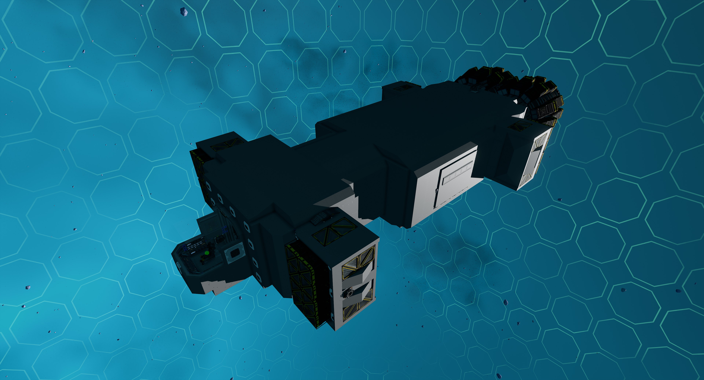
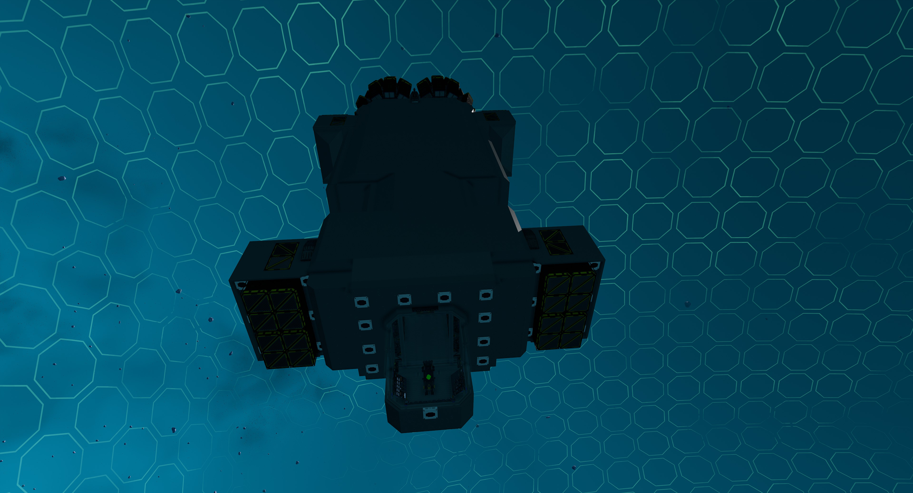
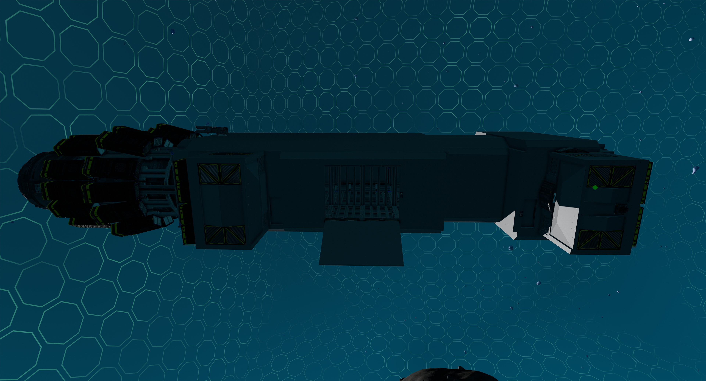
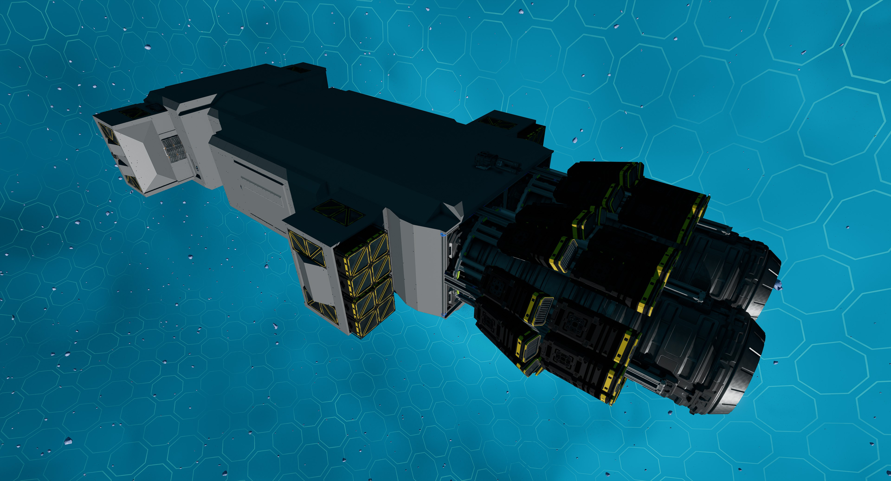
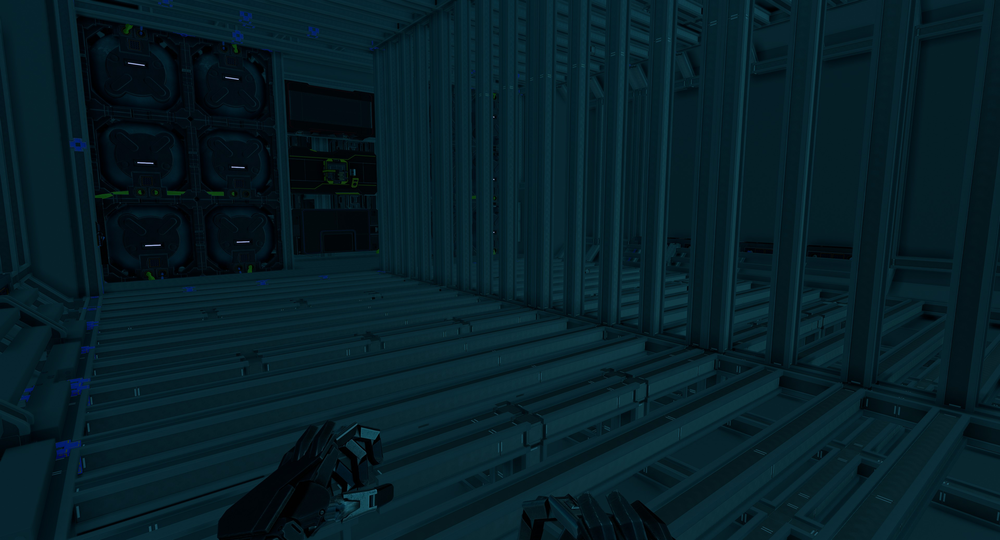
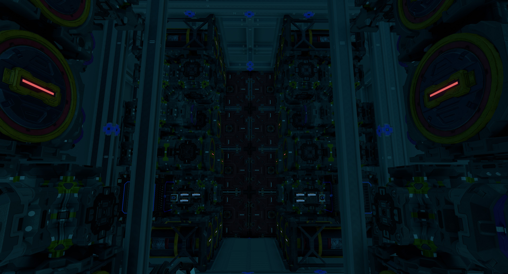

Welder SV812
The Welder SV812 is a salvager ship with a tow beam that is capable of towing a ship up to 16,000,000kg in mass. It also has crafting benches, 32 ore crates for storage and a cage area in its body to bolts parts on plus bay door access on each side.
Features
The ship has the following features:
- Tow beam that is capable of towing a ship up to 16,000,000kg in mass
- 32 ore crates
- Crafting benches with meter upgrade for basic bench
- Standard Cruise function
- Turtle and Sloth functions with adjustable rates
- Transponder system with ping function
- Two external and two internal resource bridges
- Auto generator rate script with adjustable minimum rate
- 48 T3 generators with 48 T2 enhancers from 16 T3 fuel chambers and 32 spare rods on racks
- Radiators and heat sinks that provide more than adequate cooling
- 12 large propellant tanks with 144,000,000 units of propellant
- Propellant time and fuel time panels
- 140 batteries
- Two plasma thrusters with five rings each, 32 T3 box and 32 T3 triangle thrusters providing forward thrust
- 32 T3 triangle thrusters providing braking thrust
- 48 T3 triangle thrusters for maneuvers
- NavGrid by StandPeter
- NavCas by fixerid, using custom avoidance system and ISAN 3 in 1 from Compass by Firestar99, with ability to load target from NavGrid
- Warning lights and alarm for obstacle detection and avoidance
- Speedometer
- Timer panel
- Odometer panel
Build Cost

Changelog
v1.0.0 (Current) - 15/07/2022
- Initial release